1990 — 1997
Période 1990
« Dès le premier regard que l'on portait sur une tapisserie de Isao Nariyoshi, nous éprouvions l'évidence d'un style. Sa démarche ne se situait pas dans la tradition japonaise mais elle la vitalisait par son imaginaire et sa rigueur. » Denise Bigot, présidente de ARELIS — Paris, 1997
Expositions personnelles
1995 Galerie MMG, Tokyo — Galerie Ciel, Utsunomiya — Komatsu Store à Ginza, Tokyo
1998 Exposition Œuvres Posthumes « Tissage et Plastique », Galerie Ciel, Utsunomiya, Japon
Expositions collectives
1991 Exposition Textile Sculpture, Centre culturel de Boulogne-Billancourt, France — exposition en binôme avec Jocelyne Toupet Pottier, Musée de Bourges, France
1992 1re Biennale internationale de la tapisserie contemporaine, Beauvais, France — Salon d'automne, Grand Palais, Paris — Galerie Alias, Paris
1993 Tokyo Sougetsu Kaikan, Japon — Château de Puyguilhem, Dordogne, France — Cité Internationale des Arts, Paris
1994 « De pierre en fil », Abbaye de Floreffe, Namur, Belgique — 2e Biennale internationale de la tapisserie contemporaine, Beauvais — Maison de l'UNESCO, Paris — Salon d'automne, Grand Palais — 1er Festival de la Tapisserie, Beauvais
1995 « Kutsurogu et Asobu », Galerie Dan, Tokyo
1996 3e Biennale internationale de Tapisserie Contemporaine, Beauvais — Exposition ARELIS, Cité internationale des Arts, Paris
1997 Exposition d'artistes japonais de Paris, Magasin TOBU, Utsunomiya, Japon — « La nature et l'homme », Jardin des Plantes, Paris
Œuvres
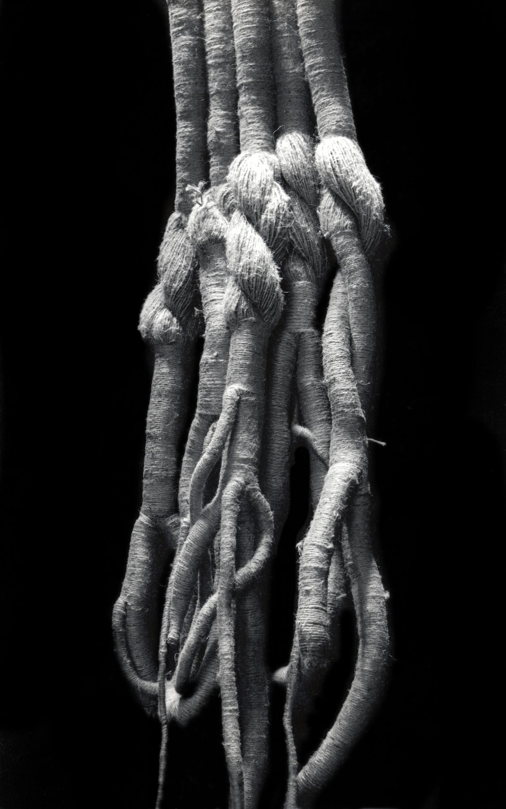
1991 « RACINE #2 » — jute, 250 × 50 cm — collection de l'artiste
「根 #2」ジュート 250 x 50 cm 1991 個人蔵
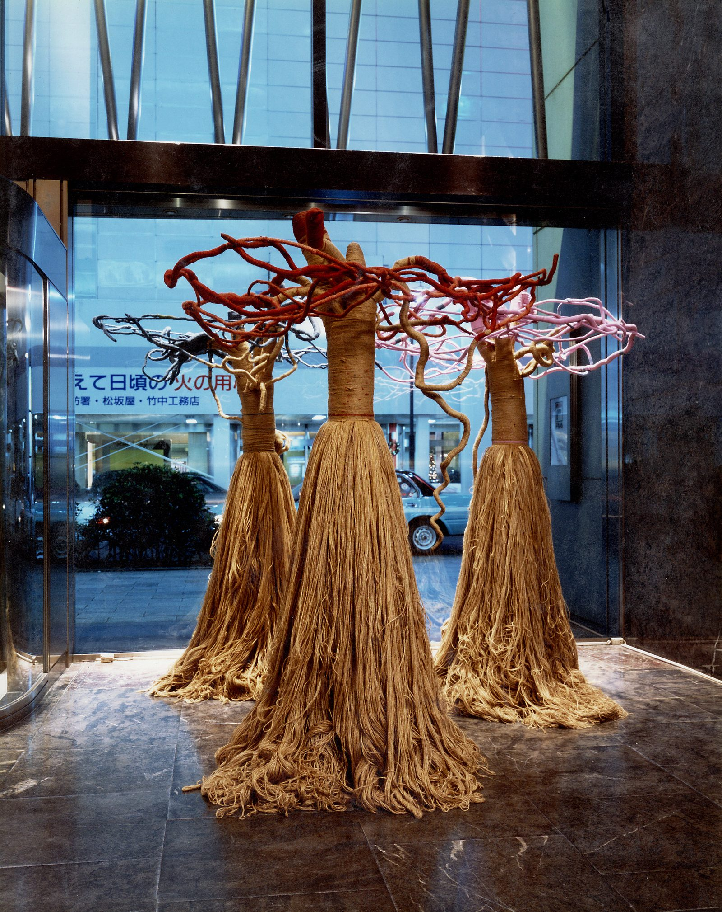
1993 « YOU-I » — jute, 3 pièces de 270 × 100 cm — collection de l'artiste
「友愛」ジュート 3点 270 x100cm 1993 作家蔵
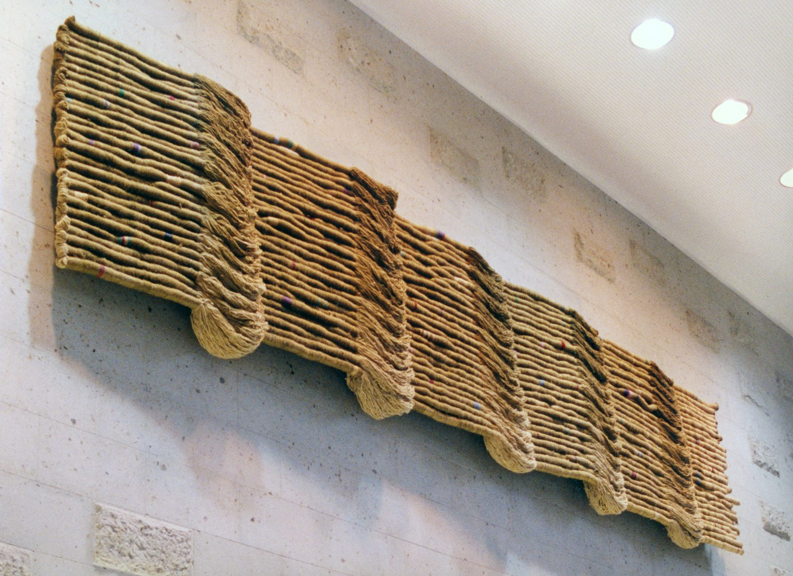
1993 « FRATERNITÉ » — jute, 140 × 700 cm — Centre culturel de Shiroyama, Utsunomiya
「友愛」ジュート 140 x 700 cm 宇都宮 城山地区市民センター 1993
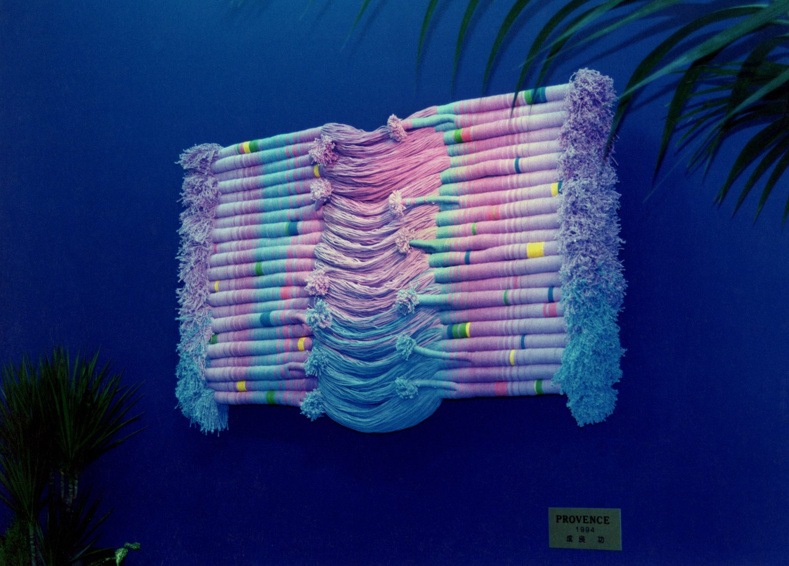
1994 « PROVENCE » — coton, 90 × 120 cm — bijouterie Futabado, Utsunomiya
「プロバンス地方」コットン 90 x 120 cm フタバ宝石店 宇都宮 1994
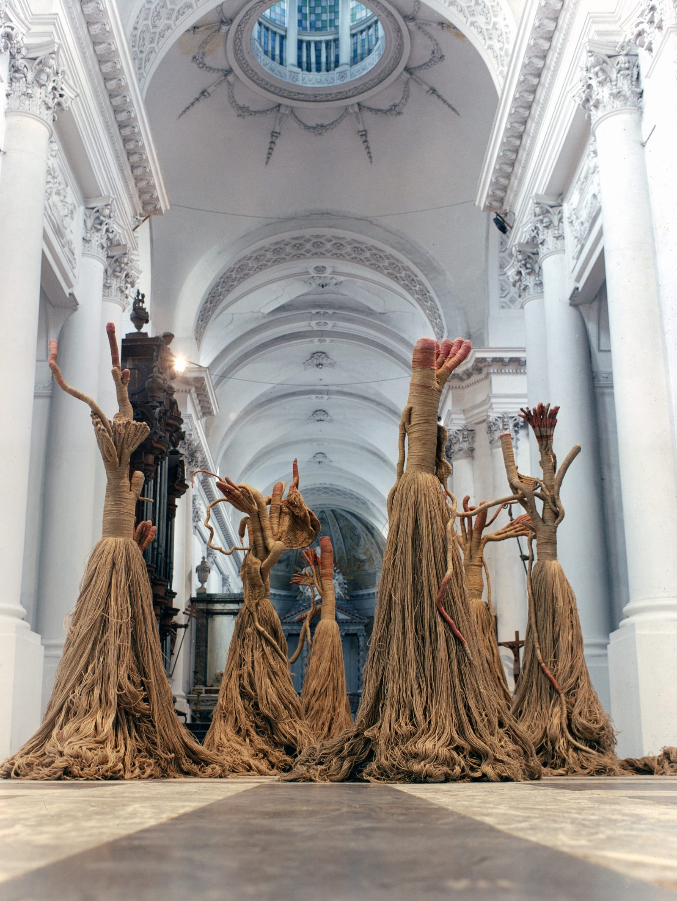
1994 « LES NYMPHES » — jute, 250 × 90 cm — Abbaye de Floreffe, Belgique — collection de l'artiste
「森、山、水の精」ジュート ７点 ベルギー フロレフ大修道院 250 x 90 cm 1994 作家蔵
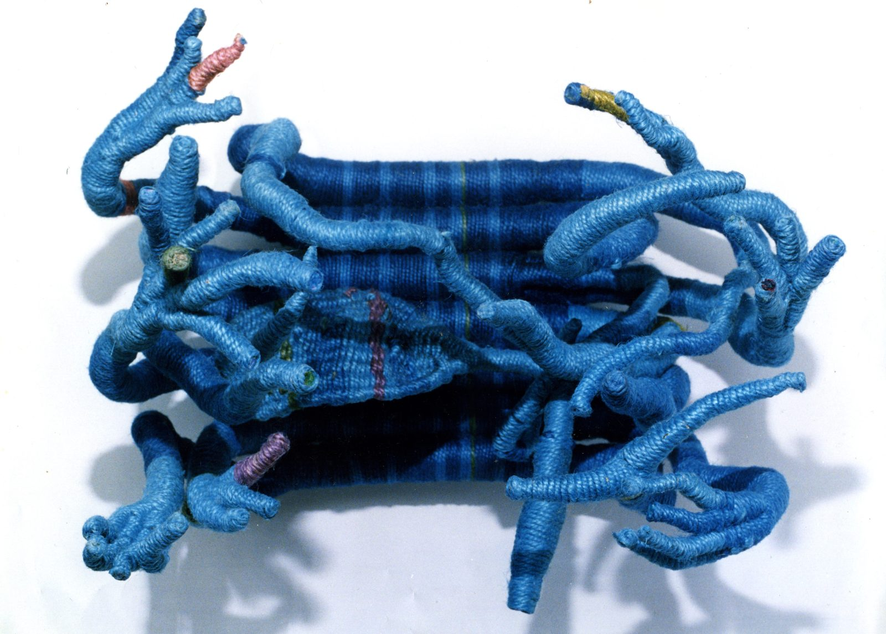
1995 « TENTACULES #1 » — jute, 40 × 50 × 30 cm — collection de l'artiste
「触手#1」ジュート 40 x 50 x 30 cm 1995 作家蔵
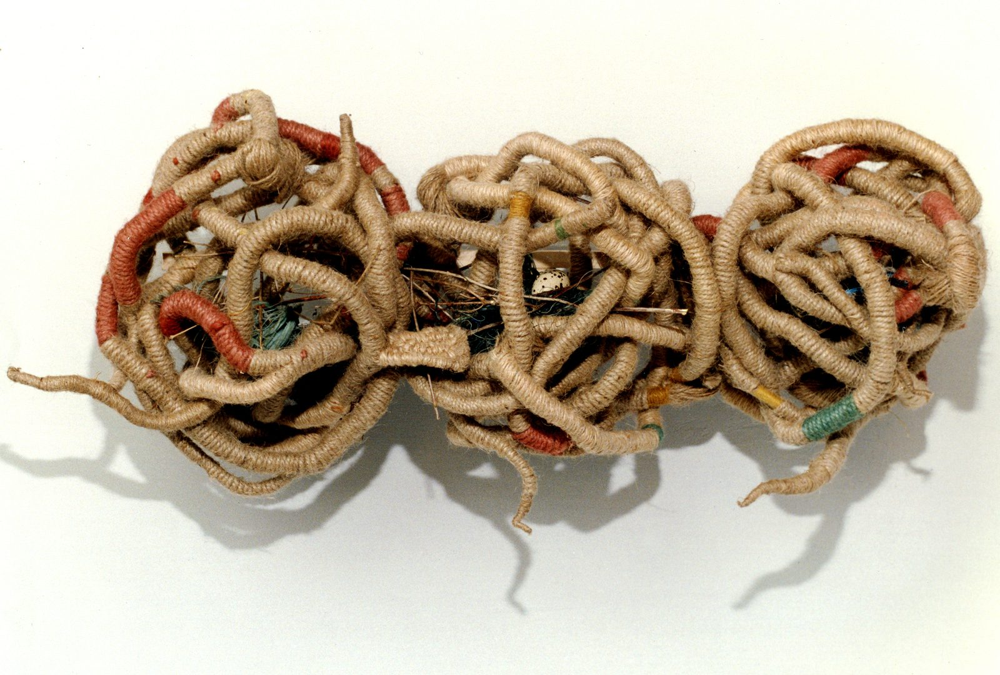
1996 « YOU-I #16 » — 3 pièces de jute, 40 × 100 cm — collection particulière
「友愛#16」ジュート 3点 40 x 100 cm 1996 個人蔵
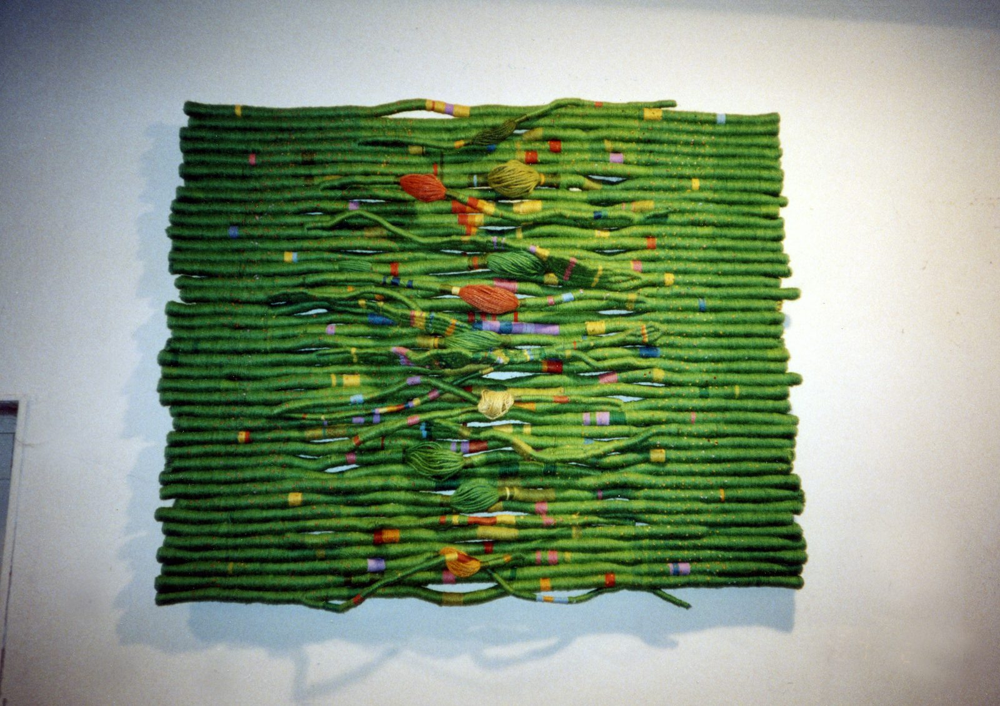
1996 « PRINTEMPS DE PROVENCE » — jute, 90 × 110 cm — collection particulière
「プロバンス地方の春」ジュート 90 x 110 cm 1996 個人蔵
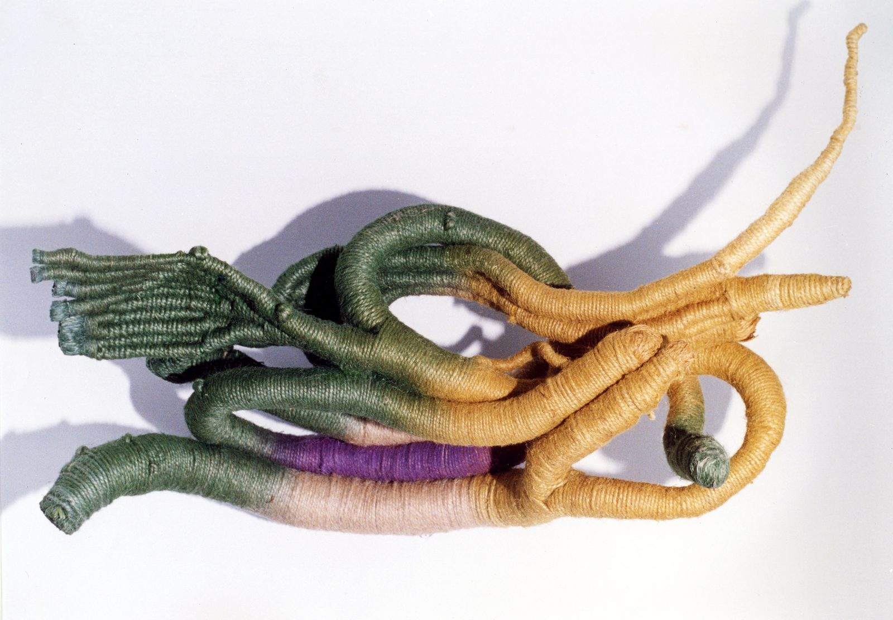
1994 « COSMOSAXO » — jute, 60 × 100 cm — collection particulière
「コスモサクソ」ジュート 60 x 100 cm 1994 個人蔵
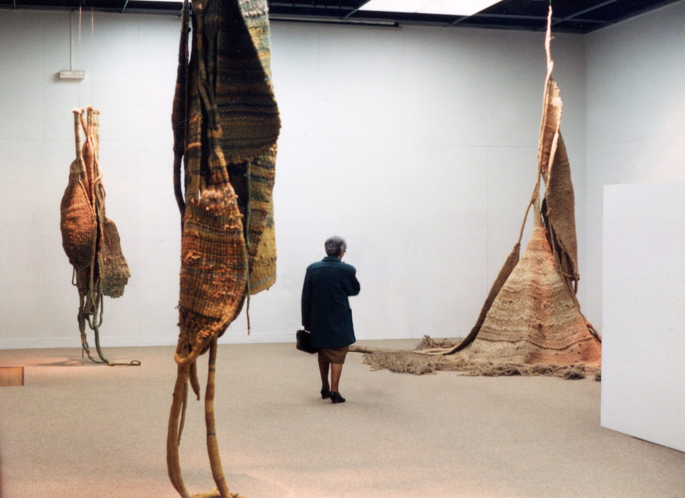
1991 « TEXTILE ESPACE » — exposition au Musée du Berry à Bourges — collection de l'artiste
「スペース テキスタイル」ベリー美術館 ブールジュ 1991 作家蔵
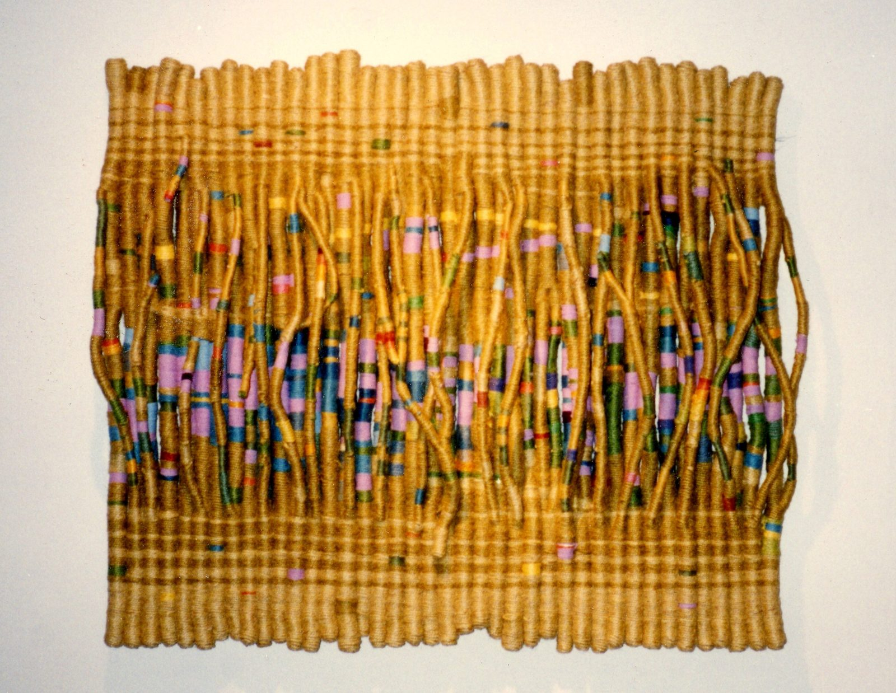
1997 « PRÈS DE SAINT REMY DE PROVENCE » — jute, 90 × 100 cm — collection de l'artiste
「サンレミー プロバンスの近くで」ジュート 90 x 100 cm 1997 作家蔵
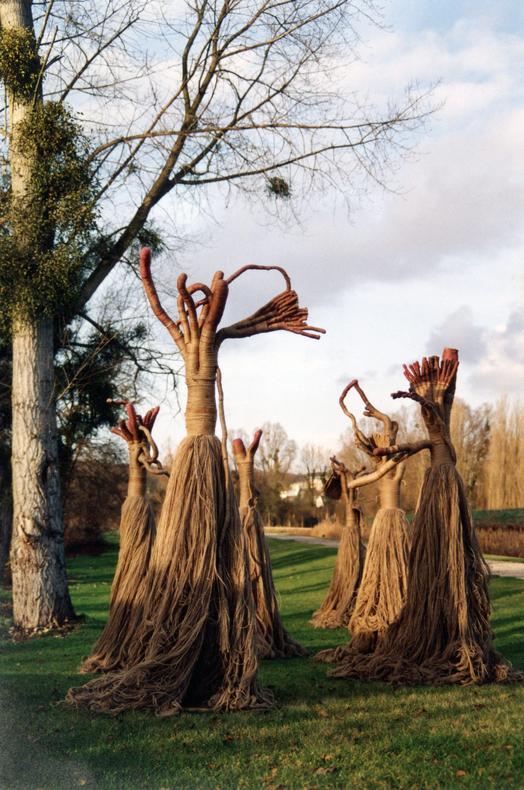
1992 « LES NYMPHES » — jute, 7 pièces de 250 × 90 cm — 1re Biennale de la Tapisserie Contemporaine de Beauvais
「森、山、水の精」7点 ジュート 250 x 90 cm 第一回現代タペストリービエンナーレ ボーベ 1992 作家蔵
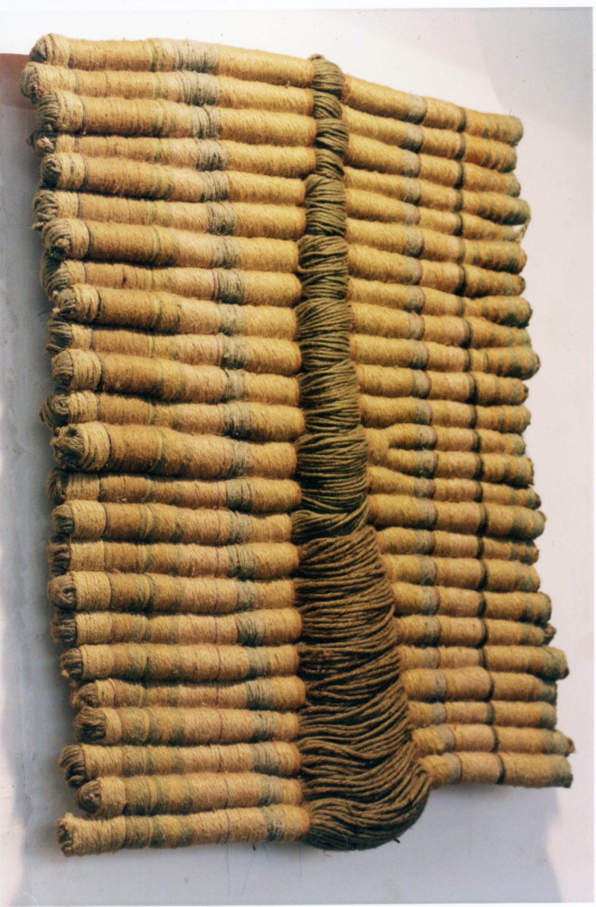
1991 « P.S #2 » — jute, 100 × 85 cm — collection particulière
「PS#2」ジュート 100 x 85 cm 1991 個人蔵
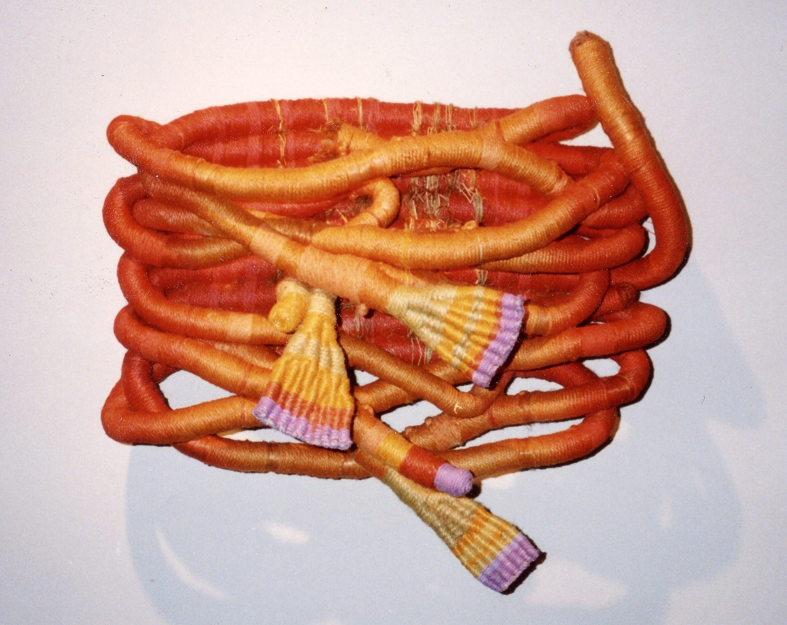
1997 « CAMARGUE ROUGE » — jute, 50 × 60 cm — collection de l'artiste
「赤いカマルグ」ジュート 50 x 60 cm 1997 作家蔵